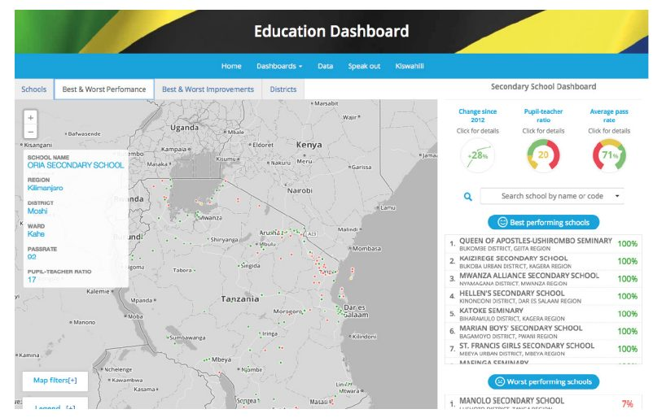
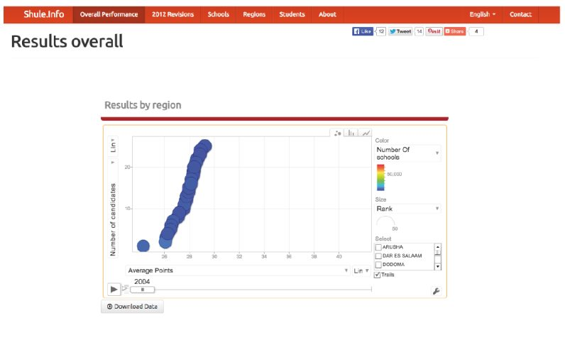
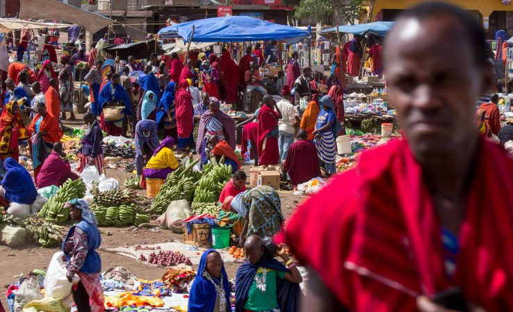

میزان پایین قبولی در آزمون ملی در سال ۲۰۱۲ موجب اعتراض عمومی در تانزانیا شد، اما درک عمومی از زمینه گستردهتر و توانایی تقاضا برای پاسخگویی به دلیل فقدان اطلاعات در مورد بخش آموزش و پرورش کشور محدود شد. دو پورتال تلاش کردند تا این وضعیت را اصلاح کنند و دادههای بیشتری را در مورد نرخ قبولی آزمون و سایر اطلاعات مربوط به کیفیت مدرسه در اختیار عموم قرار دهند.
اولین مورد، سیستم اطلاعاتی دادههای باز آموزش و پرورش (راهنمای آموزشی)، پروژهای بود که توسط ابتکار دادههای باز تانزانیا تاسیس شد، برنامهای دولتی که توسط بانک جهانی و اداره توسعه بینالمللی انگلستان (DFID) برای حمایت از انتشار، دسترسی و استفاده از دادههای باز پشتیبانی میشد. دومی، Shule (shule.info)، توسط آرنولد میند، برنامهنویس، کارآفرین، و علاقهمندان به دادههای باز که تعدادی فناوری و کسب و کار را برای تسریع تغییرات اجتماعی در تانزانیا توسعه داده است، رهبری شد.
اگرچه هر دو پورتال وعدههای قابلتوجهی را نشان میدهند - به خصوص که به تصویرسازی دادهباز مربوط است تا آن را برای مخاطبان گسترده قابلفهم سازد - تا به امروز، آنها موفقیت محدودی در تغییر واقعی تصمیمگیری شهروندان در مورد آموزش یا ایجاد پاسخگویی نهادی بیشتر داشتهاند. این تا حدی ناشی از چالشهای مربوط به نرخ نفوذ پایین اینترنت تانزانیا و عدم آشنایی با دادههای باز است.
پیشینه و زمینه
تمرکز بر مسئله / زمینه کشور
در سال ۲۰۱۲، آموزش و پرورش در تانزانیا موضوع نارضایتی عمومی قابلتوجه و بحث و جدل شد. آن سال، شش نفر از هر ده دانشآموز تانزانیایی در آزمون استاندارد سطح دوم ملی شکست خوردند که منجر به اعتراض رسانهها و درخواست برای اصلاحات شد. نتایج ضعیف حاصل تغییرات اخیر در سیستم آموزشی تانزانیا بود که در آن شهریه مدارس ابتدایی دولتی در تلاش برای افزایش ثبتنام مدارس کشور و نرخ سواد حذف شد. این حرکت باعث افزایش سریع نامنویسی اولیه، از ۶۶ درصد در سال ۲۰۰۱ به ۹۰ درصد در سال ۲۰۰۴ شد. با این حال، این افزایش با افزایش متناسب بودجه مدارس مطابقت نداشت. همانطور که سیستم مدارس تانزانیا تحت فشار ثبتنام اضافی قرار گرفت، نرخ قبولی آزمون در میان ۳۰ درصد از کودکان سن متوسطه که در مدرسه ثبتنام کرده بودند، شروع به کاهش کرد.
پس از مجموعه به خصوص بد نتایج در سال ۲۰۱۲، دولت تغییراتی را در سیستم درجهبندی ایجاد کرد که به نظر میرسد نرخ قبولی را در سالهای ۲۰۱۳ و ۲۰۱۴ افزایش دهد. با این حال، علل ریشهای مشکلات آموزشی کشور هنوز مورد توجه قرار نگرفتهاند: بودجه ناکافی و تامین بودجه مدارس، کمبود معلمان آموزشدیده، آموزش محدود معلمان و افزایش مهارت حرفهای، نارضایتی از حقوق معلمان، و نابرابریهای سرسخت منطقهای، اقتصادی و اجتماعی.
در عین حال، کسب اطلاعات در مورد آموزش عمومی آسان نبود و درک وضعیت واقعی بخش آموزش و تقاضا برای پاسخگویی از مقامات دولتی را برای شهروندان دشوار میکرد. اگرچه چندین لایحه دسترسی به اطلاعات قبل از پارلمان تانزانیا تصویب شده است، اما هنوز هیچکدام تصویب نشدهاند، در حالی که قوانین دیگر، از جمله قانون افترای کشور، ظرفیت رسانهها برای عملکرد انتقادی و مستقل را محدود میکند. رسانههای تانزانیا تنها تا حدودی توسط خانه آزادی در نظر گرفته میشوند و این کشور در فهرست جهانی آزادی مطبوعات در سال ۲۰۱۵ در رتبه ۷۵ از ۱۸۰ کشور دنیا قرار دارد.
علاوه بر این، کمبود قابلتوجهی از صداهای مستقل در رسانههای تانزانیا وجود دارد. در حالی که مالکیت رسانه شفاف است، در میان چند مالک متمرکز باقی میماند. هر چهار ایستگاه رادیویی با دسترسی ملی به عنوان طرفدار حزب حاکم در نظر گرفته میشوند، اگرچه بارومتر رسانهای آفریقا در سال ۲۰۱۰ گزارش داد که کشور تانزانیا دیدگاههای متعادلتری را نشان دادهاست. رسانههای موافق با اپوزیسیون بنا بر گزارشها قراردادهای تبلیغاتی دولتی را متوقف کردهاند. در نتیجه، هنگامی که داستانها در مورد وضعیت آموزش و پرورش، به مطبوعات تبدیل میشوند، تمایل به طرفداری از نسخه رسمی رویدادها به وجود میآید، و اغلب فاقد تعادل یا زمینه مرتبط هستند.
شهروندان اغلب قادر به مراجعه به اینترنت یا منابع دادهباز به عنوان جایگزینی برای اطلاعات مورد نیازشان نبودند. استفاده از دادههای باز در تانزانیا هنوز در مراحل ابتدایی است. بارومتر دادهباز، تانزانیا را در دسته «ظرفیت محدود» کشورهایی قرار میدهد که اقدامات مرتبط با دادههای باز آنها با محدودیتهایی در دولت، جامعه مدنی یا ظرفیت بخش خصوصی، نفوذ اینترنت و جمعآوری و مدیریت داده به چالش کشیده میشوند. تانزانیا در سپتامبر ۲۰۱۱ به ابتکار عمل مشارکت دولت باز پیوست. فاز دوم طرح اقدام OGP که در حال حاضر در حال توسعه است، دولت را متعهد به ایجاد یک درگاه دادهباز (opendata.go.tz) میکند که مجموعه دادههای کلیدی در بخشهای آموزش، بهداشت و تامین را به شکل قابل خواندن توسط ماشین منتشر میکند. تا اکتبر ۲۰۱۶، این درگاه ۱۰۰ مجموعه داده برای دانلود دارد که ۶۵ مورد از آنها توسط وزارت آموزش و پرورش تامین میشود.
فعالان اصلی
ارائهدهندگان دادههای کلیدی
سیستم اطلاعاتی دادههای باز آموزش و پرورش دادهها توسط شورای امتحانات ملی تانزانیا (NECTA) با منابع اضافی از بانک جهانی تامین شد تا جامعیت مجموعه دادهها را بهبود بخشد.
Shule.info: Shule.info بر روی منابع داده مشابه ساخته شد، اما اغلب به صورت دستی بررسی و توسط سازماندهندگان پروژه جمعآوری میشد.
کاربران و واسطههای دادههای کلیدی
سیستم اطلاعاتی دادههای باز آموزش و پرورش: این پروژه به عنوان بخشی از ابتکار دادههای باز تانزانیا، یک برنامه دولتی که توسط بانک جهانی و اداره توسعه بینالمللی انگلستان (DFID) پشتیبانی میشود، توسعه داده شد.
Shule.info: Shule.info توسط آرنولد میند، برنامهنویس تانزانیایی با پشتیبانی و کمک عملی از تواوزا توسعه داده شد.
ذینفعان کلیدی
هدف هر دو پورتال، بهبود تصمیمگیری والدین در رابطه با مدارس فرزندانشان است. علاوه بر این، آنها به دنبال بهبود روند روزنامهنگاری، به ویژه در مورد مسائل مربوط به آموزش و پرورش، و آگاه کردن بحثهای عمومی در مورد آموزش و پرورش بودند.
تشریح پروژه
آغاز فعالیت مبتنی بر دادههای باز
در سال ۲۰۱۳، شورای امتحانات ملی تانزانیا (NECTA)، یک نهاد دولتی، یک سیستم اطلاعاتی آموزش آزمایشی را راهاندازی کرد که دانلود دادهها، جستجوها و مصورسازی نتایج امتحانات اولیه و ثانویه توسط منطقه و مدرسه را ارائه میداد. این سیستم اطلاعاتی همچنین شامل آمار نسبت دانشآموز به معلم، نرخ قبولی سالانه و متوسط، رتبهبندی ملی عملکرد مدرسه و تغییرات در نرخ قبولی از سال ۲۰۱۱ میشود. با کمک بانک جهانی، نسخه به روز شده این مبحث در سال ۲۰۱۵ به عنوان سیستم اطلاعاتی دادههای باز آموزش و پرورش راهاندازی شد. علیرغم برخی چالشها و شکافهایی که با جزئیات بیشتر در زیر توضیح داده شد، دادههای موجود در سایت نشاندهنده پیشرفت قابلتوجهی در زمینه کمبود اطلاعات قبلی تانزانیا است.

Shule.info مغز برنامهنویس تانزانیایی، آرنولد میند بود. این آزمون کمی پس از سیستم اطلاعاتی اصلی نکتا منتشر شد و وقتی میند متوجه شد که نکتا نتایج آزمون انفرادی را از سال ۲۰۰۴ به صورت آنلاین منتشر کردهاست، درک شد. با این حال، تا سال ۲۰۱۲، زمانی که نرخ ضعیف قبولی در امتحانات باعث شد که مینند به طور جدی شروع به کار بر روی این پروژه کند، این اتفاق نیفتاد. در آن زمان، او متوجه ارزش بالقوه یک منبع آنلاین و به راحتی قابلاستفاده از دادههای آزمایش ملی شد.
او نتیجه گرفت که چنین دادههایی باید آنلاین باشند و در قالبی قابلفهم ارائه شوند، به طوری که شهروندان بتوانند ببینند که نتایج ضعیف در سال ۲۰۱۲ یک پدیده جدید نبود، بلکه بخشی از یک روند رو به پایین در طول شش تا هفت سال گذشته بود. میند قبلا در تصویرسازی دادهها از طریق کار خود برای موسسه سیاستگذاری توسعه تانزانیا REPOA (تحقیق قبلی در مورد کاهش فقر) مشارکت داشت؛ این کار او را از قدرت مصورسازی دادهها برای ارتباط دادن روندها و ارتباطات دادهها متقاعد کرد و به شکل دادن به توسعه شول کمک کرد.

تقاضا و عرضه نوع داده (ها) و منابع
هر دو سایت دادهای را ایجاد کردند که برای دانلود توسط کاربران باز بود. علاوه بر این، نمودارها و تجسمها به طور مستقیم در پلتفرمها در دسترس بودند.
اگرچه داده مورد استفاده برای ایجاد Shule.info در گزارشها و وبسایتهای مجزا در دسترس بود، اما هرگز به طور کامل در قالب قابل جستجو و قابل خواندن توسط ماشین برای شهروندان باز نشده بود. میند دادههای حاصل از نتایج آزمایش را بررسی، تمیز و تثبیت کرد چون هر سال آزاد میشدند.
سیستم اطلاعاتی دادههای باز آموزش و پرورش از دادههای خود دولت استفاده کرد که بیشتر آن از طریق درگاه رسمی دادهباز دولت در دسترس است. در حالی که دادههای مفید زیادی در دسترس است، برخی شکافها، از جمله کمبود نتایج ارزیابی فردی، نرخ قبولی قبل از سال ۲۰۱۲، نرخ قبولی متوسط در طول زمان، و نرخ قبولی توسط نوع و منطقه وجود دارند.

بودجه
Shule.info در زمان خود میند و با هزینه او ایجاد شد. سیستم اطلاعاتی دادههای باز آموزش و پرورش توسط دولت تانزانیا با حمایت بانک جهانی تامین مالی شد.
استفاده از داده باز
هر دو سیستم اطلاعاتی بر دادههای دولتی تکیه دارند. دادههای مورد استفاده برای ایجاد Shule.info به صورت عمومی در دسترس بودند اما باز نبودند، نیاز به پاک کردن، تفکیک کردن و استانداردسازی داشتند. دادههای مربوط به سیستم اطلاعاتی دادههای باز آموزش و پرورش کاملا باز بودند و در درگاه دادههای باز دولت تانزانیا منتشر شده بودند.
Shule.info دادههایی را برای فرم ۴ نتایج آزمون از ۲۰۰۴ تا ۲۰۱۳ در سطوح پیشنهادی، مدرسه، منطقهای و ملی ارائه میدهد. همچنین تصویری از نتایج (که توسط منطقه و جنسیت شکسته شدهاست) ارائه میدهد که به کاربران اجازه میدهد تا عملکرد متوسط در طول زمان، تعداد پیشنهادات در هر بخش ردهبندی در طول زمان و تاثیر بازبینی بحثبرانگیز دولت در نتایج ۲۰۱۲ را پیگیری کنند. تمام دادههای مورد استفاده برای ساخت سایت به منظور دانلود در دسترس است. بنابراین شول نسبت به سیستم اطلاعاتی دادههای باز آموزش و پرورش، دادههای به طور قابلتوجهی بیشتر و تفکیکشدهتر ارائه میدهد. علاوه بر این (و بر خلاف سیستم اطلاعاتی نکتا)، شول (Shule) تفسیر تصویرسازی داده خود را ارائه میدهد، و درک اهمیت دادههایی که به آنها دسترسی دارند را برای کاربران آسانتر میکند
تاثیر
تانزانیا کشوری با نرخ نفوذ اینترنت پایین (۵.۳ درصد در سال ۲۰۱۶، با توجه به ITU، آژانس تخصصی سازمان ملل متحد برای فنآوریهای اطلاعات و ارتباطات)، است و با فقدان کلی مهارتها و تخصص فنی در میان مردم مشخص میشود. همانطور که اشاره شد، آشنایی بسیار کمی با مفهوم و پتانسیل دادهباز یا داده به طور کلی وجود دارد. به این ترتیب، اگرچه این پروژهها نشاندهنده پیشرفتهای قابلتوجهی در اکولوژی فعلی داده باز هستند، اما جذب و کاربرد آنها به طور کلی محدود شدهاست و ارزیابی تاثیر آنها را دشوار کردهاست.
با این حال، معیارهای کمی را میتوان برای اندازهگیری اثرات - محدود به هر چند که هستند - از سیستم اطلاعاتی دادههای باز شول و آموزش و پرورش در نظر گرفت. تاثیر را میتوان به سه روش گسترده ارزیابی کرد: تعامل و استفاده توسط شهروندان و واسطهها؛ کیفیت و تنوع دادهها؛ و اثرات مشابه در سایر پروژههای دادهباز نیز وجود دارد.
تعامل و استفاده
طبق گفته آرنولد مایند، پس از اینکه Shule در ژوئن ۲۰۱۳ فعال شد، این سایت به طور متوسط حدود ۱۵۰۰ بازدید در ماه داشت. بازخورد مستقیم نسبت به سایت و از طریق تواوزا نشان میدهد که بازدیدکنندگان به دو دسته تقسیم شدهاند. اولین مورد شامل متخصصان داده، به طور معمول برنامهنویسان یا کارمندان سازمانهای جامعه مدنی، که قبلا از پتانسیل داده باز برای اطلاعرسانی در مورد تصمیمگیری آگاه بودند، و از سایت برای تحقیق در مورد آموزش در تانزانیا و درک بهتر زمینه آموزشی کلی بازدید کردند. این بازدیدکنندگان ممکن است از طریق تواوزا و شرکای جامعه مدنی آن یا جامعه داده باز در دارالسلام از این سایت مطلع شده باشند.
دسته دوم بازدیدکنندگان از سایت شامل دانشجویان سابق بودند که از آرشیو نتایج معاینه سایت برای بررسی نمرات خود استفاده میکردند. این دانش آموزان ممکن است در ابتدا علاقهای به داده باز نداشته باشند یا حتی از آن آگاه نباشند، اما با این حال در معرض تجسمهای شول، برای مثال، عملکرد مدرسه توسط منطقه، و ابزارهای دیگر در زمان دسترسی به سایت قرار دارند. درگیر کردن خانوادههای معمولی تانزانیا که میند در اصل امیدوار بود به آنها برسد چالش برانگیزتر بود. نرخ پایین نفوذ اینترنت و فقدان تجربه استفاده از اینترنت، میزان ترافیک اتفاقی دریافتی از طریق موتورهای جستجو را محدود کردهاست.
میند میگوید او میترسد که مردم عادی تانزانیا هنوز علاقه زیادی به نگاه کردن به تصویرسازی دادهها نداشته باشند و ترجیح میدهند که اطلاعات خود را هضم شده توسط رسانهها دریافت کنند. میند میگوید: «من نمیبینم که مردم سوالات واقعی را بپرسند.» آیدان ایاکوز، مدیر اجرایی تواوزا، معتقد است که هم عموم مردم و هم سیاستگذاران به دنبال بینش موجود در دادهها هستند، نه خود دادهها. او میگوید: «دادهها برای بسیاری از مردم استرسزا است، بنابراین داده خام برای عده کمی جذاب میباشد.» با این حال، تعداد کمی از افراد در رسانهها، دانش و مهارت لازم برای هضم پیشنهادها داده شول را دارند، علیرغم ابتکاراتی مانند اردوی آموزشی داده، که برای معرفی اعضای رسانه تانزانیا به داده باز طراحی شدهبود.
استفاده از سیستم اطلاعاتی دادههای باز آموزش و پرورش به طور مشابه توسط نرخ پایین استفاده از اینترنت در تانزانیا محدود شد. با این حال، توسعهدهندگان سایت اشاره میکنند که تانزانیاییها لزوما نیاز به دسترسی به اینترنت ندارند تا از اطلاعات ذخیرهشده در سایت بهرهمند شوند. به عنوان مثال، اعضای سازمانهای جامعه مدنی، از جمله سازمانهای مادر - معلم فعال تانزانیا، میتوانند به عنوان واسطه عمل کنند، اطلاعات مربوط به عملکرد مدرسه را برای به اشتراک گذاشتن در تابلوی اعلانات انجمن یا در جلسات منتشر کنند.
کیفیت و تنوع دادهها
ترکیب سیستم اطلاعاتی دادههای باز آموزش و پرورش و شول تنوع و در نتیجه سودمندی دادههای موجود در آموزش و پرورش در تانزانیا را افزایش داد. روی هم رفته، اطلاعات ارائهشده غنیتر و جالبتر از هر یک از سایتها هستند (یا، البته، نسبت به فقدان داده از پیش موجود). سیستم اطلاعاتی دادههای باز آموزش و پرورش شاخصهایی مانند نسبت دانشآموز به معلم، رتبهبندی منطقهای، و رتبهبندی بهبود در طول زمان را ارائه کرد، که همه آنها از طریق یک نقشه قابل کلیک و منوی کشویی مدارس هدایت میشوند. شول محدوده بسیار طولانیتری از دادهها را ثبت کرد، و نتایج بررسی به سال ۲۰۰۴ باز میگردد. علاوه بر نتایج حاصل از جنسیت، شول به جای نرخ عبور ساده سیستم اطلاعاتی دادههای باز آموزش و پرورش، عملکرد متوسطی را در طول زمان ارائه داد و به تفکیک تعداد پیشنهادات در هر تقسیمبندی در طول زمان نگاه کرد. این گزارش همچنین اثر بازبینی سال ۲۰۱۲ برای بررسی چگونگی تغییر نرخ قبولی پیشنهادات را مدلسازی کردهاست.
اگرچه براساس دادههای دولتی، مجموعه داده مورد استفاده برای ساخت شول کاملا با مجموعه داده مورد استفاده برای سیستم اطلاعاتی دولت یکسان نیست؛ این امر به دلیل تفاوت در روشهای جمعآوری دادهها میباشد. شاید در نتیجه، ارقام شول بتواند به روشهای قابلتوجهی از نسخه دولت جدا شود. برای مثال، نکتا به طور سنتی یک لیست سالیانه از ده مدرسه دولتی و متوسطه با بالاترین نتایج بررسی منتشر کردهاست. میند در سال ۲۰۱۲ گزارش داد که لیست رسمی نکتا شامل تعدادی از مدارس دولتی بود، اما تجزیه و تحلیل شول نشان داد که هر ده مدرسه برتر خصوصی بودند.
برای توسعهدهندگان سیستم اطلاعاتی دادههای باز آموزش و پرورش، یکی از اکتشافات تعجببرانگیز این بود که تغذیه یک سیستم اطلاعاتی انگیزه قوی برای انطباق با گزارش دهی دادهها بود. مقامات منطقهای و مدیران و معلمان از یافتن مدرسه یا منطقه خود در سیستم اطلاعاتی، و با دیدن اطلاعاتی که ارائه دادند، هیجانزده شدند، و به نظر میرسید که این هیجان به بهبود روند گزارشدهی، حداقل در کوتاهمدت، تعبیر میشود. این امر نشان میدهد که تازگی استفاده از دادهباز و تجسم داده میتواند یک ابزار مفید در بهبود کیفیت داده باشد.
اثرات در سایر پروژههای دادهباز
همانطور که توسعهدهندگان آخرین نسخه سیستم اطلاعاتی آموزش نشان دادهاند، شول بخشی از اکوسیستم داده نوپای است که آنها در طول توسعه و پالایش سایت خود بسیار از آن آگاه بودند. برای مقامات دولتی درگیر در ایجاد سیستم اطلاعاتی، وجود چنین پروژههای مستقلی، هم تقاضا برای انواع درگاه داده بازی که آنها میساختند را تایید کرد و هم شواهدی فراهم کرد مبنی بر اینکه قابلیتهای فنی محلی و دیگر ظرفیتهای لازم برای ساخت آن وجود دارد. سیستم اطلاعاتی خود آنها، به نوبه خود، ابزاری قدرتمند در نشان دادن پتانسیل و استفاده از دادهباز برای مخاطبان غیرفنی، به خصوص در میان سیاستگذاران بود. علاوه بر این، مصورسازی دادهها و پیوندهایی که ایجاد کردهاست، باعث ایجاد علاقه و انگیزه برای توسعه سیستم اطلاعاتیها در بخشهای دیگر، مانند حرکت وزارت دادگستری برای ترسیم دفاتر دادگاه در سراسر کشور شدهاست.
درسهای آموخته شده
سیستم اطلاعاتی دادههای باز شول و آموزش و پرورش هر دو پروژه آزمایشی بودند که در جامعهای راهاندازی شدند که تازه شروع به درک پتانسیل دادههای باز کرده بود. اگر قرار باشد پروژههایی مانند این موفق شوند، باید بر چالشهای اجتماعی مهم غلبه کنند. این بخش به بررسی برخی از مهمترین توانمندسازها و چالشهای پیش روی این پروژهها میپردازد. اگرچه این توانمندسازها و موانع برای این پروژه خاص هستند، اما نکاتی از آنچه که ممکن است در سایر پروژههای دادهباز در سایر کشورهای در حال توسعه با آن مواجه شوند را ارائه میدهند.
توانمندسازها
نفوذ واسطهها
همانطور که نفوذ اینترنت به آرامی در تانزانیا گسترش مییابد، سازمانهای جامعه مدنی مانند سازمانهای معلمان یا سازمانهای غیردولتی نقش مهمی برای ایفای نقش به عنوان واسطههایی دارند که میتوانند دیدگاههای جمعآوریشده از دادهباز را در میان شهروندانی که در غیر این صورت به داده دسترسی نخواهند داشت، منتشر کنند. توسعهدهندگان سیستم اطلاعاتی آموزش به این نکته اشاره دارند که راهحلهای با تکنولوژی فوقالعاده پایین مانند ارسال اطلاعات چاپی از سیستم اطلاعاتی دادههای باز در تابلوی اعلانات مدرسه یا جامعه میتواند در رساندن اطلاعات به افرادی که میتوانند از آن استفاده کنند، موثر باشد. تمرکز بر مصورسازی داده قابلفهم نیز چنین راهحلهای با فنآوری پایین را ممکن ساختهاست.
مشارکت در فعالیتهای جامعه مدنی
با این حال، حتی در میان این گروههای واسطه، آگاهی از پتانسیل داده باز در بهترین حالت در حال تکوین باقی میماند. مانند عموم مردم، گروههای جامعه مدنی نیز باید برای تجزیه و تحلیل و تجسم دادهها آموزش ببینند. برخی تلاشها در تانزانیا برای مشارکت جامعه مدنی صورتگرفته است: در سال ۲۰۱۲، در تلاش برای تشویق علاقه و ایجاد مهارت در میان کدگذاران و رسانهها، موسسه بانک جهانی و ابتکار رسانه آفریقا با هم ترکیب شدند تا اردوگاه اطلاعات در دارالسلام را ارائه دهند. طرح مشابهی توسط تواوزا در سال ۲۰۱۳ ارائه شد و گروههای اجتماعی مانند شبکه بنیاد دانش باز TZ تلاش کردهاند تا نشستهای دادهباز را در دارالسلام ترویج دهند. تاکنون این کار عمدتاً توسط سازمانهای جامعه مدنی محلی مانند Twaweza و REPOA انجام شده است، اما سازمانهای توسعه بینالمللی که در حال حاضر در تانزانیا فعالیت میکنند میتوانند به خوبی به آنها کمک کنند. همانطور که در بسیاری از مطالعات موردی در این مجموعه وجود دارد، وجود یک اکوسیستم قوی ICT4D و D4D راه را برای استفادههای جدید و مبتکرانه از دادههای باز، میسر کرد.
موانع
نفوذ اینترنت
شاید مهمترین چالش ناشی از نفوذ کم اینترنت و نرخ استفاده از آن در تانزانیا باشد. این دو سیستم اطلاعاتی از این فرض شروع میشوند که ارائه اطلاعات به مخاطبان هدف شرایط را بهبود خواهد بخشید. با این حال، با توجه به نرخ نفوذ پایین اینترنت تانزانیا، به ویژه در مناطق روستایی، که تخمین زده میشود نفوذ اینترنت حدود یک چهارم آن در مناطق شهری باشد، کسب اطلاعات برای مخاطبان هدف یک چالش باقی میماند. این امر به وضوح دسترسی به دادههای مرتبط با آموزش و پرورش و داده باز را به طور گستردهتر محدود میکند. علاوه بر این، از ۴.۷ درصد تانزانیاییها که در سال ۲۰۱۴ از اینترنت استفاده کردند، اکثریت عظیم این کار را فقط با تلفن همراه انجام دادند؛ تنها ۰.۱۷ درصد از مردم تانزانیا اشتراک پهنای باند ثابتی داشتند. به منظور جذابیت بیشتر، هر سایت دادهباز به وضوح باید راهاندازی یک برنامه تلفن همراه را برای جلب توجه «کاربر خردهفروشی داده که در یک پناهگاه اتوبوس با تلفن همراه نشسته است» در نظر بگیرد.
این چالشی است که پروژههای داده در سراسر جهان در حال توسعه با آن مواجه هستند، و برخی از آنها با توسعه راهحلهای کمهزینه و پهنای باند کم در دسترس کاربران بر روی اتصالات کند موبایل به آن پرداختهاند. در برخی موارد، به اشتراکگذاری اطلاعات بر روی SMS نیز موثر بودهاست.
منافع عمومی و اعتماد به فنآوری
اگرچه تکنولوژی ذاتا یک چالش در جهان در حال توسعه است، اما موانع ممکن است حتی زمانی که بحث استفاده از تکنولوژی (و دادهها) به عنوان ابزارهای تغییر اجتماعی مطرح باشد، بیشتر باشد. میند اشاره میکند که به طور کلی مردم تانزانیا عمیقا با پتانسیل اینترنت ناآشنا هستند و شاید هنوز مایل به اعتماد به آن نیستند. او اضافه میکند که تانزانیاییها هنوز باید به راهحلهای دیجیتال برای مشکلات زندگی روزمره چه پیچیده و چه دنیوی متعهد باشند. به عنوان مثال، او به سختی تجربه خود در متقاعد کردن اپراتورهای اتوبوس برای اتخاذ یک برنامه کاربردی که قبلا ایجاد کرده بود اشاره میکند که به مسافران اجازه خرید بلیط از طریق تلفن را میداد. او میگوید: «این کار تنها یک شرکت را در بر خواهد داشت و سپس مردم مزایای آن را خواهند دید. اما اول باید آن را متقاعد کنید.»
نگاهی به مسائل پیش رو
وضعیت فعلی
سیستم اطلاعاتی دادههای باز آموزش و پرورش تجسمهای موجود برای دادهها را تنها از سال ۲۰۱۲ تا ۲۰۱۴ نشان میدهد. با توجه به اینکه داده آموزشی برای سال ۲۰۱۶ در درگاه داده باز دولت تانزانیا، opendata.go.tz در دسترس است، به نظر میرسد که این سایت دیگر به طور فعال به روز نمیشود و ممکن است به پایان عمر خود برسد.
به طور مشابه، Shule.info از سال ۲۰۱۳ هیچ نتیجهای اضافه نکرده است. اگرچه میند میگوید که اصلاحات بیشتری را در پروژه خود در نظر گرفتهاست (از جمله افزودن نتایج آزمون فرم ۴ و افزایش طیف اطلاعات در مورد مدارس)، سیستم اطلاعاتی باید در حال حاضر غیرفعال در نظر گرفته شود.
اگرچه طول عمر کوتاه این پروژهها دشواری در حفظ پروژههای دادهباز در بلندمدت بدون وجود یک مدل کسبوکار روشن یا استراتژی عملیاتی برای درگیر کردن مخاطبان هدف را مشخص میکند، با این حال تاثیر آنها غیرقابلانکار بوده و هر دو پروژه دیدگاههای ارزشمندی را برای پروژههای دادهباز در سراسر جهان در حال توسعه ارائه میکنند.
با توجه به مفید بودن و نیاز به داده، هیچ درخواستی برای به روز رسانی آن وجود نداشت، و او قادر نبود سرمایهگذاری لازم برای ساخت شول به یک محصول تجاری برای اطمینان از پایداری طولانیمدت آن را به دست آورد. علاوه بر این، با توجه به نرخ نفوذ اینترنت پایین، وجود دو سیستم اطلاعاتی جداگانه برای اطلاعات آموزشی نیز میتواند برای والدین گیجکننده باشد و اثربخشی هر دو پلتفرم را محدود کند. تاثیر بیشتر ممکن است ناشی از یکپارچهسازی دو پلتفرم و پیشرفت همکاری یک پروژه باشد، به جای اینکه یک پایه کاربر محدود با دو نقطه ورود جداگانه برای دسترسی به اطلاعات یکسان فراهم شود. شایانذکر است که حرکت به سمت هماهنگی بیشتر در واقع صورتگرفته است، به ویژه مشارکت میند در جلسات استراتژی توسعه برای سیستم اطلاعاتی دادههای باز آموزش و پرورش. با این حال، به نظر نمیرسد که این تلاشها در هماهنگی نتایج مطلوب را به همراه داشته باشند.
تکرارپذیری
این سیستم اطلاعاتی قدرت یک ابزار ساده فریب آمیز را نشان میدهد، که میتواند به صورت محلی در عرض چند هفته توسط یک توسعهدهنده (Shule.info) یا یک تیم کوچک (سیستم اطلاعاتی دادههای باز آموزش و پرورش)، با حمایت یا بودجه خارجی کم یا بدون پشتیبانی، ساخته شود، و سپس از طریق بازخورد کاربر اصلاح شود. همانطور که یکی از توسعهدهندگان سیستم اطلاعاتی دادههای باز آموزش و پرورش میگوید: «حداقل محصول قابل دوام [ MVP ] را به دست آورید. برخی فرضیات در مورد دادهها ایجاد کنید، آن را به آنجا ببرید و یک واکنش را تحریک کنید.» بنابراین، چه ابزارها یا روشهای خاص مورد استفاده توسعهدهندگان این پلتفرمها تکرار شوند یا خیر، رویکرد کلی آنها - استفاده از داده باز برای ایجاد پلتفرمی با هدف بهبود رفاه عمومی - میتواند الهامبخش نوآوران جامعه محور مشابه در کشورهای در حال توسعه باشد.
نتیجهگیری
در حالی که نه شول و نه سیستم اطلاعاتی باز آموزش و پرورش قادر به دستیابی به پایداری بلند مدت و یا انواع تاثیر متحولکننده بر آموزش و تصمیمگیری والدین نبودند، آنها را میتوان به عنوان نشانههای روشنی از چگونگی اختصاص، تلاشهای دادهمحور برای افزایش تصمیمگیری شهروندان و سود بردن از منافع عمومی دانست که میتواند به سرعت ملموس شود. در واقع، پروژهها همچنین نیاز به یک مدل کسبوکار طولانیمدت را برای اطمینان از اینکه MVPهای اولیه به پلتفرمهای «پذیرنده» و پرکاربرد تبدیل میشوند - یک درس کلیدی برای حوزه عمل دادههای باز، روشن میکنند